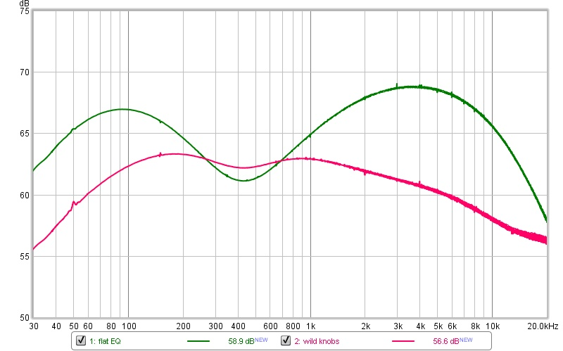
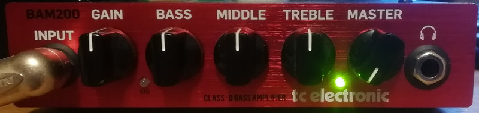
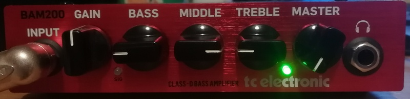

TC Electronic BAM200 – frequency response
The TC Electronic BAM200 is a compact class-D bass amplifier. With the EQ controls in their neutral position its frequency response is far from flat, and you cannot make it flat using the provided EQ control knobs. This is not a flaw, but something you should be aware of when you decide what aplifier to choose / buy. Information on the specific sound character is not availabe anywhere online - hence this article.
Frequency response

With the neutral EQ the level varies by roughly 8 dB between the dip around 400 Hz and the broad peak around 4 kHz, and it falls off quite steeply above 10 kHz. The flattest setting is smoother, but still bass and treble will be rolled off substantially.


Fan
One more thing you should know before you decide for this amplifier: it has no smart fan control. The fan runs even when the amplifier is not under load and makes quite some noise that can be heard in quiter environments, even on stage.